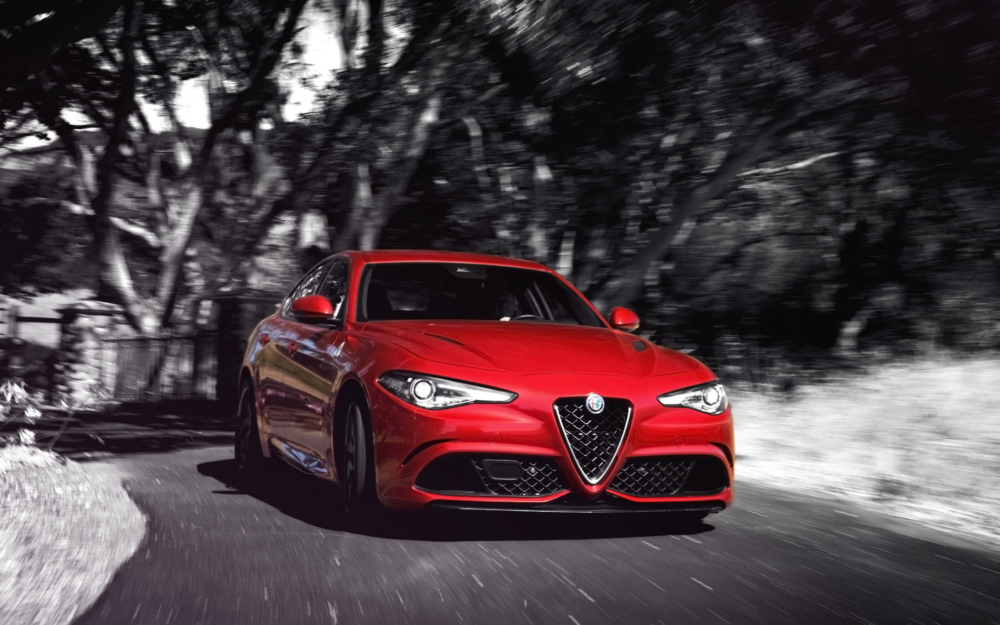

Alfa Romeo Giulia Quadrifoglio
Informatii generale
- Marca
- Alfa Romeo
- Model
- Giulia
- Ani de productie
- 2016 - prezent
- Numar de scaune
- 4
- Numar de usi
- 4
Motor
- Putere
- 510 CP @ 6500 rot/min
- Cuplu
- 600 Nm @ 2500 rot/min
- Volumul motorului
- 2891 cm3 (3.0L)
- Numarul de cilindri
- 6
- Pozitionarea cilindrilor
- in forma de V
- Diametrul cilindrilor
- 86.5mm
- Cursa cilindrilor
- 82mm
- Turbosuflanta (link)
- Da
Greutate si dimensiune
- Masa proprie
- 1580 kg
- Lungime
- 4639mm
- Latime
- 1873mm
- Inaltime
- 1426mm